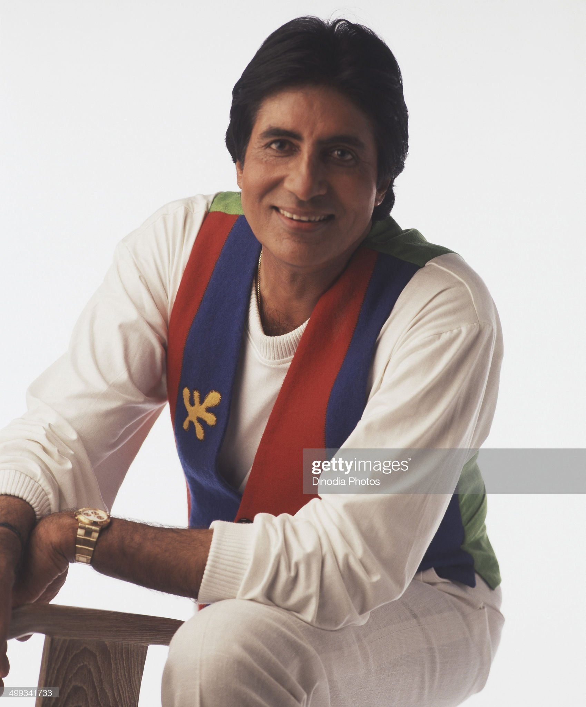

Amitabh Bachchan

Early Career (1969–1972)
Bachchan made his film debut in 1969, as a voice narrator in Mrinal Sen's National Award-winning film Bhuvan Shome. His first acting role was as one of the seven protagonists in the film Saat Hindustani, directed by Khwaja Ahmad Abbas and featuring Utpal Dutt, Anwar Ali (brother of comedian Mehmood), Madhu and Jalal Agha.
Anand (1971) followed, in which Bachchan starred alongside Rajesh Khanna. His role as a doctor with a cynical view of life garnered Bachchan his first Filmfare Award for Best Supporting Actor. He then played his first antagonist role as an infatuated lover-turned-murderer in Parwana (1971). Following Parwana were several films including Reshma Aur Shera (1971). During this time, he made a guest appearance in the film Guddi which starred his future wife Jaya Bhaduri. He narrated part of the film Bawarchi. In 1972, he made an appearance in the road action comedy Bombay to Goa directed by S. Ramanathan which was moderately successful. Many of Bachchan's films during this early period did not do well. His only film with Mala Sinha, Sanjog (1972) was also a box office failure.